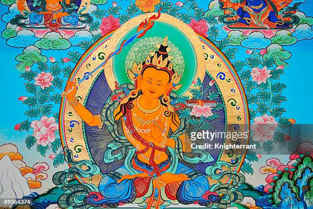
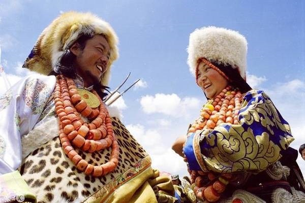
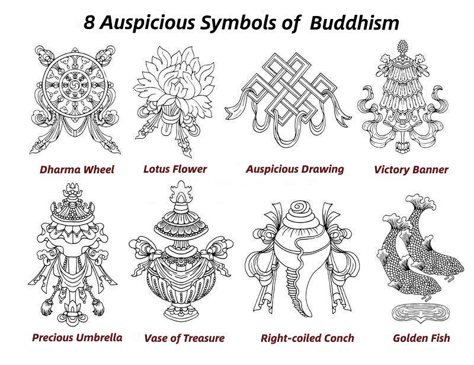
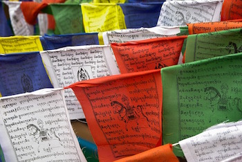

GraphicArt

唐卡
繪畫唐卡藏語稱“止唐”，一般是在布上畫的，也有在絹上畫的， 用顏色區別的有彩色唐卡，有黑底描金的黑唐卡，硃砂底描金的紅唐卡， 有金底上用硃砂描繪的金唐卡等。用材料區別的有各種綢緞剪貼的堆秀唐卡， 織錦唐卡，緙絲唐卡，刺繡唐卡等。

服飾
基本特徵是肥腰、長袖、大襟、右衽，大多採用皮革和氆氌（ཕྲུག） 為主要面料。 且都喜歡用一些物品，像是珊瑚、瑪瑙、貓晶石、 珍珠等寶石做裝飾。

八寶器
相傳世尊釋迦牟尼佛降生之際，天人敬獻“八吉祥”爲供養； 是故，此八物甚爲尊貴殊勝，一直以來，受到佛弟子及信衆之恭敬推崇 ，尤其在西藏，八吉祥用途甚廣，如佛殿、法座、法器、唐卡、建築 ，隨處可見以之作爲裝飾紋樣；還有傳供、升座、開光等重大儀典 ，也常供養八吉祥。
